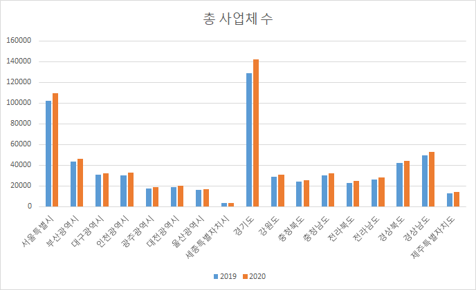

상권 정보 WEB
메인 페이지로 돌아가기
상권분석 데이터
| 총 사업체 수 | | |
| 시도별 | 2019 | 2020 |
| 서울특별시 | 102310 | 109283 |
| 부산광역시 | 43455 | 46363 |
| 대구광역시 | 30560 | 32398 |
| 인천광역시 | 30110 | 33129 |
| 광주광역시 | 17147 | 18679 |
| 대전광역시 | 18638 | 19808 |
| 울산광역시 | 15905 | 17072 |
| 세종특별자치시 | 3231 | 3620 |
| 경기도 | 128895 | 142159 |
| 강원도 | 29019 | 30556 |
| 충청북도 | 23993 | 25773 |
| 충청남도 | 30007 | 32285 |
| 전라북도 | 22917 | 24746 |
| 전라남도 | 26288 | 27920 |
| 경상북도 | 41937 | 44124 |
| 경상남도 | 49727 | 53114 |
| 제주특별자치도 | 12935 | 14112 |

- 사업체 수는 경기도 > 서울특별시 > 경상남도 순으로 많았다.
- 대체로 2019년에 비해 2020년에 증가하는 추세이다.
| 총 영업이익(백만원) | | |
| 시도별 | 2019 | 2020 |
| 서울특별시 | 3538587 | 1385838 |
| 부산광역시 | 1290713 | 439098 |
| 대구광역시 | 895807 | 560897 |
| 인천광역시 | 802210 | 382707 |
| 광주광역시 | 483367 | 189940 |
| 대전광역시 | 547382 | 154341 |
| 울산광역시 | 443233 | 326074 |
| 세종특별자치시 | 130237 | 61800 |
| 경기도 | 4067451 | 1609385 |
| 강원도 | 753949 | 437097 |
| 충청북도 | 596270 | 398853 |
| 충청남도 | 754890 | 403709 |
| 전라북도 | 703178 | 318350 |
| 전라남도 | 710061 | 355593 |
| 경상북도 | 1061043 | 345291 |
| 경상남도 | 1521413 | 910850 |
| 제주특별자치도 | 322686 | 267087 |

- 총 영업이익은 경기도 > 서울특별시 > 경상남도 순으로 가장 많았다.
- 영업이익은 2019년에 비해 2020년에 감소하는 추세다.
| 총 영업이익 (백만원)/총 사업체 수 | | |
| 시도별 | 2019 | 2020 |
| 서울특별시 | 34.58691233 | 12.68118555 |
| 부산광역시 | 29.70228973 | 9.470871169 |
| 대구광역시 | 29.31305628 | 17.31270449 |
| 인천광역시 | 26.64264364 | 11.55202391 |
| 광주광역시 | 28.18959585 | 10.16863858 |
| 대전광역시 | 29.36913832 | 7.791851777 |
| 울산광역시 | 27.86752594 | 19.09992971 |
| 세종특별자치시 | 40.3085732 | 17.0718232 |
| 경기도 | 31.55631328 | 11.32102083 |
| 강원도 | 25.9812192 | 14.30478466 |
| 충청북도 | 24.85183178 | 15.47561401 |
| 충청남도 | 25.15713 | 12.50453771 |
| 전라북도 | 30.6836846 | 12.86470541 |
| 전라남도 | 27.01084145 | 12.73613897 |
| 경상북도 | 25.30087989 | 7.825469132 |
| 경상남도 | 30.59531039 | 17.14896261 |
| 제주특별자치도 | 24.94673367 | 18.92623299 |

- 총 영업이익과 총 사업체 수를 나눠서 비교 했을 때, 2019년에 비해 많이 감소한 지역이 있다.
- 울산광역시, 경상남도, 제주특별자치도는 다른 시도들과 비교했을 때,
감소한 비율이 작은 것을 확인할 수있다.
{kind=link}